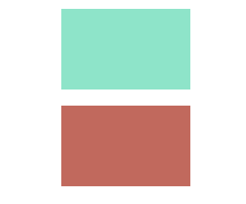
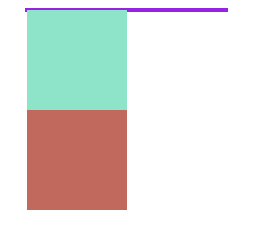
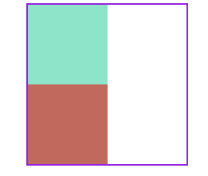
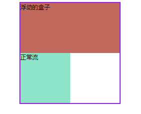
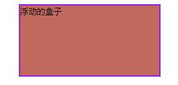

# BFC
BFC 可以理解成一个与外界隔离的容器。
理解 BFC 原理很重要，因为 BFC 对页面的布局有着很大的影响。
也就是说，你不了解 BFC ，你很难布局好一个页面。
首先说明一下，它是一个现象，是在盒子身上发生的。
默认情况下，每个盒子都不存在这个现象。
# 1、触发条件
给盒子设置这些属性之后，盒子具有 BFC 特性。
body的根元素浮动元素：
float属性为none之外绝对定位：
pisition|absolute|fixeddiplay属性为inline-block等overflow:hidden|auto|scroll
这些事常见的触发条件。
# 2、应用
我们利用盒子的这些特性可以解决以下几个问题。
（1）解决外边距合并问题

我们有这样两个垂直排列的盒子，将第一个盒子的 margin-bottom 设为 20px，第二个盒子的 margin-top 设置为 10px，那么，这两个盒子的距离因该时 30px。
结果不是 30px，而是20px，这就是外边距合并.
两个盒子在垂直方向上有 margin 的话，两个盒子的 margin 会合并，两个盒子的真实距离是取两个盒子 margin 大的一个。
触发 BFC 就可以解决这个问题，比如我们分别给两个盒子设置以下属性。
overflow: hidden;
（2）解决清除浮动

如果子盒子设为浮动的话，父盒子就不能包裹子盒子，这就是高度塌陷。

这时候我们让父盒子触发 BFC，可以解决这个问题。
// 触发 BFC
position: relative;
（3）阻止常规流元素被浮动元素覆盖

浮动的元素（浮动元素在前面）和正常流的元素一起时，正常流的盒子会忽视浮动元素（重叠）。

解决方案是让正常流的盒子触发 BFC 会避免重叠，此方法可实现两栏布局，（不触发可以实现文字环绕效果）
overflow: hidden;
← 网页三栏布局